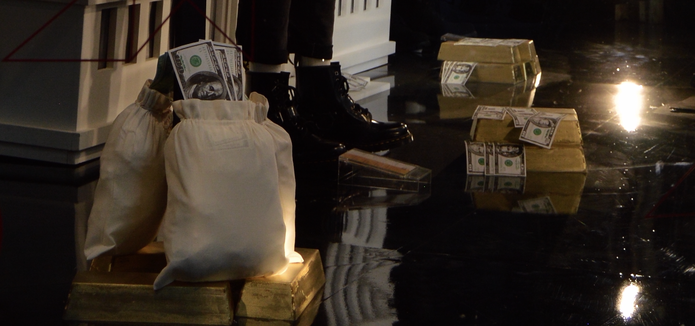
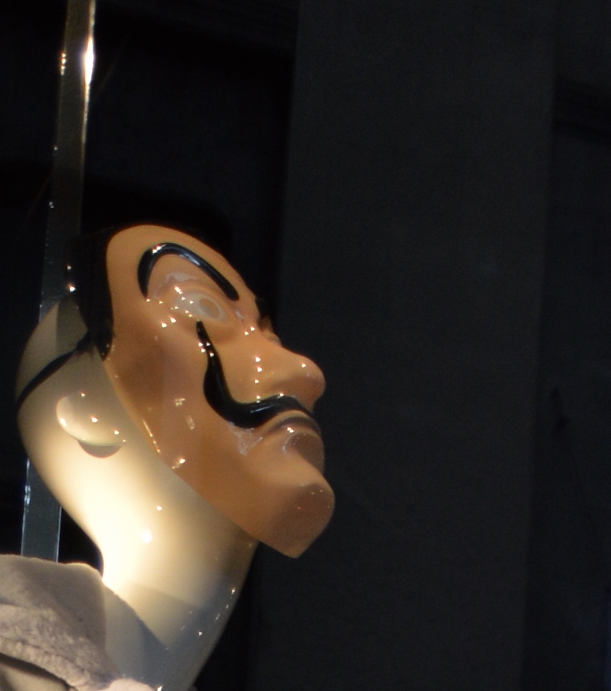

Descripción
El color de los sentimientos es una instalación-performance, que busca generar un ambiente emotivo, donde los participantes tengan la libertad de expresar lo que nunca han podido hacer. Sé aborda como tema principal la carencia afectiva, en la cual es un problema latente dentro de la sociedad y en conjunto con la falta de afectividad familiar, el abandono y la poca comunicación, se transforma en una ola de consecuencias negativas que afectan, influyen y vulneran la fragilidad de las personas
El Color de los Sentimientos invita a los participantes a tener un encuentro psico-afectivo entre ellos, reflejando sus sentimientos por medio de aparatos electrónicos. Al mismo tiempo, las emociones que están sintiendo se representan por medio de colores, funciona mediante la lectura y registro de ondas cerebrales que serán proyectadas en pantallas de proyección, se propone mostrar los patrones generados de acuerdo con la reacción de los participantes.
>Autor: Estefani Arana Fonseca
Tecnica: Instalación/performance
Año: 2023
Lugar: Lerma
 Estefani Arana Fonseca es una apasionada artista digital. Nacida en una familia de pocos artistas y creativos, Estefani desarrollo su pasión por el arte desde una edad temprana. Fascinada por la intersección entre la tecnología, creatividad y el arte, decidió combinar sus habilidades artísticas junto con la informática y las nuevas tecnologías.
Actualmente está completando su licenciatura en Arte y Comunicaciones Digitales en la Universidad Autónoma Metropolitana de México. Pesar de aun estar en porceso de finalizar su educación, Estefani se ha sumergido en el mundo del arte digital con un enfoque claro y una determinación inquebrantable. Su enfoque artístico se centra en explorar todas las posibilidades infinitas de la tecnología para crear mundos visuales, creativos, únicos, fantasiosos y envolventes. Sus obras incorporan elementos surrealistas con un poco de ficción que desafían la percepción de lo convencional.
Estefani es una persona muy arriesgada a la experimentación y a lo imposible que para ella nada es imposible y está constantemente buscando nuevas formas de expresión artística. Sus herramientas incluyen software de diseño gráfico, audio, modelado 3D, fotografía, edición de video y visuales.
Ha participado en algunos proyectos en el mundo del arte digital. Su instalación/performance “El color de los sentimientos” se exhibió en la sala de usos múltiples de la Universidad Autónoma Metropolitana y exploro el tema de la carencia afectiva en jóvenes adultos. También participo en el videomapping llamado “Nosotros somos calavera” en Lerma de Villada, México.
En su tiempo libre, Estefani disfruta investigando, conociendo, explorando y compartiendo en foros, conferencias, eventos de arte y tecnología.